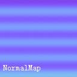

Normalmap原理及去除接缝
Normalmap原理及去除接缝
在遇到Normal map上出现接缝时是十分棘手的。它不像Diffuse和Specular那样，可以直观的在ZB或者BodyPaint里用投射的方法去修平。这是因为Normal map本身原理所致。
在这里我想先再详细讲一下Normal Map的原理。如果你觉得自己对Normalmap已经非常熟悉可以跳过这一节。
● NormalMap 原理：
我建议新手在得到一张NormalMap时，把Red/Green/Blue三个通道分开来看，因为NormalMap的三个通道之间是互相独立的，在R/G/B三个通道中，不同的灰度，表达了低模表面上法线偏移的程度。大家知道，法线在物理中的定义是垂直于物体表面的一条假想的直线。而在MAYA中，法线的概念并不一样，它不一定要垂直于物体表面，并且具有方向行。我们可以在MAYA中直观的看到物体上每个顶点的法线的方向。
显示顶点法线后的模型
[page]
我们可以选择顶点，用Edit Polygons->Normals->Vertex Normal Edit Tool试着调整顶点法线的偏移。来让模型看起来与现在不同。
经过这样调整法线方向以后，模型表面像增加了一个曲度。这种调整的原理类似于NormalMap对法线偏移的调整。只不过NormalMap能够调整模型上的每一处细节；但用这种方法，只能调整低模上有限的点。
如果我们建立了如下图的高低模，并烘焙出法线贴图。

那么实际上是把LowPoly表面的法线偏移方向调整成了HighPoly表面的法线方向。如下图。
[page]
● 结论和规律
我们再做一个简单的实验，测试了三色通道的具体含义，得出后面的结论。
这个是圆环模型
这个是用光照的方法生成的Normal
以下是R、G、B三个通道：
Red通道
Green通道
由上图得出以下结论：
在红色通道里：白色表示法线向右偏，黑色表示法线向左偏。
在绿色通道里：白色表示法线向下偏，黑色表示法线向上偏。
在兰色通道里：越黑表示越深。
如果想把某出的Nomalmap填平，可以在上面覆盖一层RGB值为128、128、255的颜色，编号为:8080ff
MAYA里Normalmap的绿色通道和MAX里Normalmap的灰度相反。
有了这些研究成果，以后修改Normal就方便多了。甚至可以手绘部分细节。
这样就可以得出下面的规律：
所有Normal贴图的红色通道，都是在水平方向上有黑白渐变。
所有Normal贴图的绿色通道，都是在垂直方向上有黑白渐变。
根据这个现象可以很容易的在通道里判断出哪里的Normal不正常，需要红绿通道交换。
[page]
修理Normalmap接缝
在做人物的时候如果遇到下图这样的接缝，最开始做的应该是弄清是哪张贴图产生的接缝，而不要盲目的直接去修Diffuse。正确的做法应该是排除其他贴图的干扰，单独贴上Diffuse， 修掉Diffuse上的接缝，再单独把 Specular贴到color上修掉接缝，最后再修Normalmap的接缝。
对于Diffuse和Specular上的接缝，可以很容易的用ZBrush的ZApplink插件修掉。但对于Normal上的接缝，是不能用直观的方法修掉的。因为接缝两边的法线偏移的值并不是相同的，也就是说，颜色是不同的。下面我们就来探讨一下如何去处Normalmap上的接缝，而不仅仅是用8080ff的颜色把所有细节涂平。
我们先排除其他贴图的干扰，只贴NormalMap，可以看到有一条明显的接缝。现在的法线看起来似乎是图上箭头所表示的趋势。在前一节已经探讨了Normalmap的原理。脖子后面接缝的产生也是因为左右两边法线偏移方向不对。我们要想修正这条接缝就是调整要Normalmap上的颜色，使接缝两边的法线方向一致。
↑现在看上去的法线方向
↑修改后应该达到的法线方向
所以要将左边绿色网格对应区域的法线向左偏，白色网格对应区域的法线向右偏。
[page]
根据“在红色通道里：白色表示法线向右偏，黑色表示法线向左偏。”的原则，要在红色通道里把绿色网格那边的Normalmap加深，白色网格那边的Normalmap减淡。这样就可以把接缝修掉了，而且不会损失Normalmap上的细节。如图：
在红色通道里把绿色区域接缝附近的Normalmap的减淡（上图），把白色区域附近的Normalmap的加深（下图）。
这样就把脖子后面的接缝修掉了。虽然看起来原理很复杂，但只要理解了每个通道所代表的含义，很直接的会想到在通道里用加深减淡的方法修正法线偏移。如果实在弄不清到底是用加深还是减淡，就先随便用加深或者减淡试一下，如果接缝变浅了那就对了。但记住，修接缝的时候一定要排除其他贴图的干扰，只贴一张图去修。最终修好的效果如图：
- 本文标题：Normalmap原理及去除接缝
- 本文作者：粥粥の辣椒酱
- 本文链接：https://cglook.github.io/posts/Normal01/
- 版权声明：本博客所有文章除特别声明外，均采用 CC BY-NC-SA 4.0 许可协议。转载请注明出处！